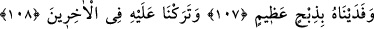
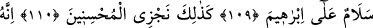
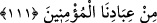

birinci tevhid olan ef’âl tevhidini gerçekleştirmek için İbrahim (a.s.)’ın malını almıştır.
İkinci tevhit olan sıfât tevhidini gerçekleştirmek için onu evladını kurban etmekle
sınamıştır. Üçüncü tevhid olan zât tevhidini gerçekleştirmek için de onu Nemrud’un
ateşine atarak cisim ve canını almıştır. İşte bütün bunlardan İbrahim (a.s.)’ın fenâ fillah
ve bekâ billah makamlarına ulaştığı ortaya çıkmaktadır.
Allah Teâlâ bizleri ve sizleri tevhidin hakikatına, tecrid ve tefridin sırrına ulaştırsın!
“Biz iyileri böyle mükâfatlandırırız.”
Bu söz, Allah Teâlâ’nın İbrahim ve İsmail (a.s.)’a lütuf ve ihsanda bulunarak onları
büyük beladan kurtarmasının illet ve gerekçesidir. Emredilen hüküm henüz
gerçekleşmeden neshi câiz görenler bunu delil saymışlardır. İbrahim (a.s.) oğlunu
kurban etmekle memurdu; ancak bu gerçekleşmeden hüküm kaldırılmıştır. el-Es’iletü’l-
mufhıme’de der ki, bu kıssa Mûtezilenin aleyhine bir delildir. Demek ki Allah Teâlâ
fiilen gerçekleşmesini irade etmediği bir şeyi emredebilir. Âyet buna delâlet etmektedir.
Nitekim Allah Teâlâ İbrahim (a.s.)’a oğlunu kurban etmesini emretmiş; ancak bunu irade
etmemiştir. Mûtezile, emir ve iradenin farklı olabileceğini kabul etmez.
“Bu, gerçekten” muhlisi diğerlerinden ayırt eden zorluğu “çok açık bir imtihandır,
diye seslendik.”
Baklî der ki: Allah Teâlâ bu durumun zâhirde belâ olduğunu haber verdi. Bâtında ise
bu bir belâ değildir. Zira bu belânın hakikatında müşâhede menzillerine ulaşma ve
mükâşefe hakikatlarının sırlarını şühûd ve müşâhede söz konusudur. Bu ise Allah’a
yakınlık sebeplerinin en büyüklerindendir. Asıl belâ bir an dahi seni hak Teâlâ’yı
müşâhede etmekten perdeleyen ve engelleyen şeydir. Bu mânâda Allah ile dostları
arasında asla belâ olmaz. Allah dostlarına göre belâ, velâ ve dostluğun ta kendisidir.
Harîrî der ki, bela muhataplara üç ayrı şekilde tezahür eder: 1. Muhaliflere musibet ve
cezadır. 2. Hayırda öncü olanlara temizlik ve keffarettir. 3. Veli ve sıddıklara ise bir
türlü imtihandır.
Ey Câmî, gönlünü aşk yolunda gam ve derde koy
Çünkü bu derdi çekmeyen o yolun adamı olmaz
107, 108, 109, 110, 111. Biz, oğluna bedel ona büyük bir kurban verdik. Geriden
gelecekler arasında ona (iyi bir nam) bıraktık: İbrahim’e selâm! dedik. Biz iyileri
böyle mükâfatlandırırız. Çünkü o, bizim mü’min kullarımızdandır.